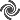
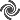
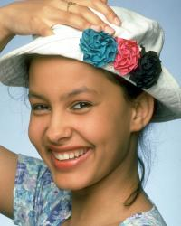

class Image < Object
(instance methods p-w)
mixes in Comparable
Table of Contents
instance methods
instance methods
palette?
img.palette? -> true or
false
Description
Returns true if the image is PseudoClass and has 256 unique
colors or less.
Returns
true or false
Magick API
IsPaletteImage
paint_transparent
img.paint_transparent(color, opacity=TransparentOpacity, invert=false, fuzz=img.fuzz) ->
image
Description
Changes the opacity value of all the pixels that match
color to the value specified by
opacity. If invert is true, changes the pixels that don't
match color.
Arguments
- color
- Either a color
name or a pixel.
- opacity
- The new opacity value, either an opacity value or a number
between 0 and QuantumRange. The default is
TransparentOpacity.
- invert
- If true, changes all the pixels that are not the
target color.
- fuzz
- By default the pixel must match exactly, but you can
specify a tolerance level by passing a positive value.
Returns
A new image
See also
matte_replace,
Draw#matte, transparent
Magick API
TransparentPaintImage
pixel_color
img.pixel_color(x, y[, new_color]) -> pixel
Description
Returns the color of the pixel at x, y. Optionally, changes
the color of the pixel to a new color.
If new_color is specified, pixel_color changes the image
type to DirectClass if necessary.
Arguments
- x, y
- The x- and y-coordinates of the pixel.
- new_color
- If specified, the pixel is set to this color. May be
either a color name or
a Pixel.
Returns
A
Pixel having
the RGB values of the specified pixel.
Example
old = image.pixel_color(20,40,"white")
Magick API
AcquireImagePixels
polaroid
img.polaroid(angle=-5.0) [
{ optional arguments } ] ->
image
Description
Produce an image that looks like a Polaroid® instant
picture. If the image has a "Caption" property, the value is used as a
caption.
Optional arguments may be specified in a block associated
with the method. These arguments control the shadow color and
how the label is rendered. By default the shadow color is
gray75. To specify a different shadow color, use
self.shadow_color. To specify a different border
color (that is, the color of the image border) use
self.border_color. Both of these methods accept
either a color name or a
Pixel argument.
The following annotate
attributes control the label rendering: align, decorate, density, encoding, fill, font, font_family, font_stretch, font_style, font_weight, gravity, pointsize, stroke, stroke_width, text_antialias, undercolor.
img.polaroid do
self.shadow_color = "gray40"
self.pointsize = 12
end
Arguments
- angle
- The resulting image is rotated by this amount, measured
in degrees. The default is -5.0.
Example

Magick API
PolaroidImage
See also
The
Polaroid Effect
Notes
"Polaroid" and the other names of products of Polaroid
Corporation are trademarks of Polaroid Corporation.
posterize
img.posterize(levels=4, dither=false)
-> image
Description
Reduces the image to a limited number of
colors for a "poster" effect.
Arguments
- levels
- Number of color levels allowed in
each channel. Very low values (2, 3, or 4) have the most
visible effect. The default is 4.
- dither
- If true, dither the image. The default is false.
Returns
A new image
Example
 

See also
ordered_dither,
quantize
Magick API
PosterizeImage
preview
img.preview(preview) -> image
Description
Creates an image that contains 9 small versions of the
receiver image. The center image is the unchanged receiver. The
other 8 images are variations created by transforming the
receiver according to the specified preview type with varying
parameters.
A preview image is an easy way to "try out" a transformation
method.
Arguments
One of the following PreviewType constants:
- RotatePreview
- ShearPreview
- RollPreview
- HuePreview
- SaturationPreview
- BrightnessPreview
- GammaPreview
- SpiffPreview
- DullPreview
- GrayscalePreview
- QuantizePreview
- DespecklePreview
- ReduceNoisePreview
- AddNoisePreview
- SharpenPreview
- BlurPreview
- ThresholdPreview
- EdgeDetectPreview
- SpreadPreview
- SolarizePreview
- ShadePreview
- RaisePreview
- SegmentPreview
- SwirlPreview
- ImplodePreview
- WavePreview
- OilPaintPreview
- CharcoalDrawingPreview
- JPEGPreview
Returns
A new image
Example
This half-size preview demonstrates the SolarizePreview
argument.

Magick API
PreviewImage
profile!
img.profile!(name, profile) ->
self
Description
Adds or removes a ICM, IPTC, or
generic profile from an image. If profile
is nil, the specified profile is removed from the
image. Use profile('*', nil) to remove all
profiles from the image.
Arguments
- name
- The profile name, or "*" to represent all the profiles in
the image.
- profile
- The profile value, or
nil to cause the
profile to be removed.
Returns
self
See also
add_profile and
delete_profile perform
very similar functions. However, add_profile
accepts the name of a profile file on disk instead of the
profile data itself and, if the file contains more than one
profile, will load all the profiles at once.
Magick API
ProfileImage
Notes
ImageMagick does not automatically remove profiles when
resizing images. If you are trying to make your JPEG thumbnail
images as small as possible, use profile! to
remove any profiles from the image as well. Also see strip!
properties
img.properties [
{|name,value| block} ] -> hash
Description
If called with an associated block, properties
runs the block once for each property defined for the image.
The block arguments are the property name and its value. If
there is no block, properties returns a hash with
one element for each property. The hash key is the property
name and the associated value is the property value.
Returns
If called without a block, returns a hash, otherwise returns
self.
See also
[ ], [ ]=
Note
The EXIF property is not created until the first time an
EXIF tag or entry number is referenced.
quantize
img.quantize(number_colors=256, colorspace=RGBColorspace, dither=RiemersmaDitherMethod,
tree_depth=0, measure_error=false) ->
image
Description
Analyzes the colors within a reference image
and chooses a fixed number of colors to represent the image.
The goal of the algorithm is to minimize the difference between
the input and output image while minimizing the processing
time.
Arguments
- number_colors
- The maximum number of colors in the result image. Must be
<= QuantumRange.
- colorspace
- The colorspace to quantize
in. Color reduction, by default, takes place in the RGB color
space. Empirical evidence suggests that distances
in color spaces such as YUV or YIQ correspond
to perceptual color differences more closely
than do distances in RGB space. The Transparent color
space behaves uniquely in that it preserves the matte channel
of the image if it exists.
- dither
- A DitherMethod
value. Set to
NoDitherMethod to disable
dithering. See the documentation for the
ImageMagick -dither option for more information.
- tree_depth
- The tree depth to use while
quantizing. The values 0 and 1 support automatic tree depth
determination. The tree depth may be forced via values
ranging from 2 to 8. The ideal tree depth depends on the
characteristics of the input image, and may be determined
through experimentation. See the documentation for the
ImageMagick -treedepth option for more information.
- measure_error
- Set to
true to calculate
quantization errors when quantizing the image.
Returns
A new image
Example
See the example for colorize.
See also
ordered_dither,
posterize, ImageList#quantize
Magick API
QuantizeImage
quantum_operator
img.quantum_operator(operator, rvalue,
channel=AllChannels) ->
self
Description
Performs the requested integer arithmetic operation on the
selected channel of the image. This method allows simple
arithmetic operations on the component values of all pixels in
an image. Of course, you could also do this in Ruby using
get_pixels and store_pixels, or view,
but quantum_operator will be faster, especially
for large numbers of pixels, since it does not need to convert
the pixels from C to Ruby.
Arguments
- operator
-
One of the following
QuantumExpressionOperator
constants:
- AddQuantumOperator
AndQuantumOperatorDivideQuantumOperatorLShiftQuantumOperatorMaxQuantumOperatorMinQuantumOperatorMultiplyQuantumOperatorOrQuantumOperatorRShiftQuantumOperatorSubtractQuantumOperatorXorQuantumOperatorPowQuantumOperatorLogQuantumOperatorThresholdQuantumOperatorThresholdBlackQuantumOperatorThresholdWhiteQuantumOperatorGaussianNoiseQuantumOperatorImpulseNoiseQuantumOperatorLaplacianNoiseQuantumOperatorMultiplicativeNoiseQuantumOperatorPoissonNoiseQuantumOperatorUniformNoiseQuantumOperatorCosineQuantumOperatorSineQuantumOperatorAddModulusQuantumOperator
Some of these constants are not defined in older
releases of ImageMagick. To see which ones are defined,
enter this statement in IRB:
Magick::QuantumExpressionOperator.values {|v| puts v}
- rvalue
- a
Numeric operation rvalue.
- channel
- A ChannelType
value. The default is to operate on the R, G. and B
channels.
Returns
self
Example
Divide the red component of all the pixels in the image by
2:
img.quantum_operator(DivideQuantumOperator, 2, RedChannel)
See also
function_channel
The Image:View class supports
operations on individual pixels and collections of pixels, as
well as operations on channels within pixels. See view, below.
Magick API
EvaluateImageChannel
radial_blur
img.radial_blur(float) -> image
radial_blur_channel
img.radial_blur_channel(float
[, channel...]) ->
image
Description
Applies a radial blur to the selected image channels.
Arguments
- angle
- Amount of blur, in degrees
- channel...
- 0 or more ChannelType arguments. If no
channels are specified, all the channels are blurred.
Returns
A new image
See also
radial_blur
Magick API
RadialBlurImageChannel
raise
img.raise(width=6, height=6,
raised=true) ->
image
Description
Creates a simulated three-dimensional
button-like effect by lightening and darkening the edges of the
image.
Arguments
- width
- The width of the raised edge in pixels. The default is
6.
- height
- The height of the raised edge in pixels. The default is
6.
- raised
- If
true, the image is raised, otherwise
lowered.
Returns
A new image
Example

Magick API
RaiseImage
random_threshold_channel
img.random_threshold_channel(
thresholds, [channel...] ) -> image
Description
Changes the value of individual pixels based
on the intensity of each pixel compared to a random threshold.
The result is a low-contrast, two color image.
Arguments
- thresholds
- A geometry string containing
LOWxHIGH thresholds. The string is in the form `XxY'.
The Y value may be omitted, in which case it is assigned the
value QuantumRange-X. If an % appears in the string then the
values are assumed to be percentages of QuantumRange.
If the string contains 2x2, 3x3, or
4x4, then an ordered dither of order 2, 3, or 4 will be
performed instead. A Geometry object may be used as
well.
- channel...
- 0 or more ChannelType arguments. If no
channels are specified, all the channels are
thresholded.
Returns
A new image
Example
geom = Geometry.new(QuantumRange/2)
random_threshold_channel(geom, RedChannel)

See also
adaptive_threshold,
bilevel_channel,
threshold
Magick API
RandomThresholdImageChannel
recolor
img.recolor(color_matrix) -> image
Description
Use this method to translate, scale,
shear, or rotate image colors. Although you can use variable
sized matrices, typically you use a 5×5 for an RGBA image
and a 6×6 for CMYKA. Populate the last row with
normalized values to translate.
Arguments
An array of Float values representing the recolor
matrix.
Magick API
RecolorImage
reduce_noise
img.reduce_noise(radius) -> image
Description
Smooths the contours of an image while still
preserving edge information. The algorithm works by replacing
each pixel with its neighbor closest in value.
Arguments
- radius
- A neighbor is defined by radius. Use a
radius of 0 and
reduce_noise selects a suitable
radius for you.
Returns
A new image
Example
The left side of the image has been modified by add_noise. The right side
has been filtered by reduce_noise(0).

See also
enhance, unsharp_mask
Magick API
ReduceNoiseImage
remap
img.remap(remap_image, dither=RiemersmaDitherMethod) ->
self
Description
Reduce the number of colors in img
to the colors used by remap_image. If
a dither method is specified then the
given colors are dithered over the image as necessary,
otherwise the closest color (in RGB colorspace) is selected to
replace that pixel in the image.
Arguments
- remap_image
- The reference image
- dither
- A DitherMethod
value. RiemersmaDitherMethod is the default. To disable
dithering specify NoDitherMethod.
Returns
self
Example

See also
ImageList#remap
Magick API
RemapImage (available in ImageMagick 6.4.3-6)
resample
img.resample(horizontal_res=72.0[, vertical_res]) -> image
Description
Resample image to specified horizontal and
vertical resolution.
Resize the image so that its rendered
size remains the same as the original at the specified target
resolution. For example, if a 300 DPI image renders at 3 inches
by 2 inches on a 300 DPI device, when the image has been
resampled to 72 DPI, it will render at 3 inches by 2 inches on
a 72 DPI device. Note that only a small number of image formats
(e.g. JPEG, PNG, and TIFF) are capable of storing the image
resolution. For formats which do not support an image
resolution, the original resolution of the image must be
specified via the density attribute prior to specifying the resample
resolution.
Arguments
- horizontal_res
- the target horizontal resolution. The default is
72.0.
- vertical_res
- the target vertical resolution. The default is
horizontal_res.
resize
img.resize(new_width, new_height,
filter=LanczosFilter,
support=1.0) -> image
img.resize(scale_factor) -> image
Description
Changes the size of the receiver to the specified
dimensions.
Arguments
You can specify the new size in two ways. Either specify the
new width and height explicitly, or specify a scale
factor, a number that represents the percentage
change.
Use the change_geometry method to
resize an image with constraints such as "maintain the current
proportions."
- new_width, new_height
- The desired width and height.
- filter
- The filter to
use when resizing. If you do not specify a filter argument,
resize uses the value of the receiver's filter attribute.
Most of the filters are FIR (finite
impulse response), however, Bessel, Gaussian, and Sinc are
IIR (infinite impulse response). Bessel and Sinc are windowed
(brought down to zero) with the Blackman filter.
- support
- Values > 1 increase the blurriness. Values < 1
increase the sharpness. If this argument is not specified,
resize uses the value of the receiver's blur attribute.
- scale_factor
- You can use this argument instead of specifying the
desired width and height. The percentage size change. For
example, 1.25 makes the new image 125% of the size of the
receiver. The scale factor 0.5 makes the new image 50% of the
size of the receiver.
Returns
A new image
See also
change_geometry,
resize!, magnify, minify, sample,
scale, thumbnail
Magick API
ResizeImage
resize!
img.resize!(new_width,
new_height, filter=LanczosFilter,
support=1.0) -> self
img.resize!(scale_factor) -> self
Description
In-place form of resize.
Returns
self
resize_to_fill
img.resize_to_fill(width [, height [,
gravity=CenterGravity]])
-> image
Description
A convenience method. Resize the image to fit within the
specified dimensions while retaining the aspect ratio of the
original image. If necessary, crop the image in the larger
dimension.
Arguments
- width
- The width of the resulting image in pixels
- height
- (Optional) The height of the resulting image in pixels.
If omitted, defaults to width.
- gravity
- Use this argument to specify which portion of the image
to retain when cropping. The value can be any GravityType value. The
effect is the same as the gravity
argument to the
crop method. The default
is CenterGravity.
Returns
A new image
Example
In this example, some rows have been cropped from the top
and bottom to produce a square thumbnail from a rectangular
image without distorting the image.

See also
crop, resize, resize_to_fit
Notes
crop_resized is an alias for this method.
resize_to_fill!
img.resize_to_fill!(width [, height [,
gravity=CenterGravity]])
-> self
resize_to_fit
img.resize_to_fit(new_width [, new_height])
-> image
Description
A convenience method. Resize the image to fit within the
specified dimensions while retaining the original aspect ratio.
The image may be shorter or narrower than specified in the
smaller dimension but will not be larger than the specified
values.
Arguments
- new_width
- The maximum width of the resized image.
- new_height
- (Optional) The maximum height of the resized image. If
omitted it defaults to the value of new_width.
Returns
A new image
Example
Compare the result of this example to the result of the
resize_to_fill example above.

See also
resize, resize_to_fill
resize_to_fit!
img.resize_to_fit!(new_width [, new_height])
-> self
roll
img.roll(x_offset, y_offset) ->
image
Description
Offsets an image as defined by x_offset and y_offset.
Arguments
- x_offset
- The number of columns to offset the image.
- y_offset
- The number of rows to offset the image.
Returns
A new image
Example
This image has been offset 25% in both directions.

Magick API
RollImage
rotate
img.rotate(amount [, qualifier])
-> image
Description
Rotate the receiver by the specified angle. Positive angles
rotate clockwise while negative angles rotate
counter-clockwise. New pixels introduced by the rotation are
the same color as the current background color. Set
the background color to "none" to make the new pixels
transparent black.
Arguments
- amount
- The number of degrees to rotate the image.
- qualifier
- If present, either ">" or "<". If ">", rotates
the image only if the image's width exceeds its height. If
"<" rotates the image only if its height exceeds its
width. If this argument is omitted the image is always
rotated.
Returns
A new image, or nil if the image was not
rotated because it did not meet the qualification specified by
the second argument.
Example

See also
affine_transform,
shear
Magick API
RotateImage
rotate!
img.rotate!(amount [, qualifier])
-> self
Description
In-place form of rotate.
Returns
self, or nil if the image was not rotated
because it did not meet the qualification specified by the
second argument.
sample
img.sample(new_width, new_height)
-> image
img.sample(scale_factor) -> image
Description
Scales an image to the desired dimensions with pixel
sampling. Unlike other scaling methods, this method does not
introduce any additional color into the scaled image.
Arguments
- new_width, new_height
- The desired width and height.
- scale_factor
- You can use this argument instead of specifying the
desired width and height. The percentage size change. For
example, 1.25 makes the new image 125% of the size of the
receiver. The scale factor 0.5 makes the new image 50% of the
size of the receiver.
Returns
A new image
See also
sample!, magnify, minify, resize,
scale, thumbnail
Magick API
SampleImage
sample!
img.sample!(new_width, new_height)
-> self
img.sample!(scale_factor) -> self
Description
In-place form of sample.
Returns
self
scale
img.scale(new_width, new_height)
-> image
img.scale(scale_factor) -> image
Description
Changes the size of an image to the given
dimensions.
Arguments
- new_width, new_height
- The desired width and height.
- scale_factor
- You can use this argument instead of specifying the
desired width and height. The percentage size change. For
example, 1.25 makes the new image 125% of the size of the
receiver. The scale factor 0.5 makes the new image 50% of the
size of the receiver.
Returns
A new image
See also
scale!, magnify, minify, resize,
sample, thumbnail
Magick API
ScaleImage
scale!
img.scale!(new_width, new_height)
-> self
img.scale!(scale_factor) -> self
Description
In-place form of scale.
Returns
self
segment
img.segment(colorspace=RGBColorspace, cluster_threshold=1.0, smoothing_threshold=1.5, verbose=false) ->
image
Description
Segments an image by analyzing the
histograms of the color components and identifying units that
are homogeneous with the fuzzy c-means technique.
Arguments
- colorspace
- A
ColorspaceType
value. Empirical evidence suggests that
distances in YUV or YIQ correspond to perceptual color
differences more closely than do distances in RGB space. The
image is then returned to RGB colorspace after color
reduction.
- cluster_threshold
- The number of pixels in each cluster must
exceed the the cluster threshold to be considered valid.
- smoothing_threshold
- The smoothing threshold eliminates
noise in the second derivative of the histogram. As the value
is increased, you can expect a smoother second
derivative.
- verbose
- If
true, segment prints
detailed information about the identified classes.
Returns
A new image
Example
segment(YUVColorspace, 0.4, 0.4)

Magick API
SegmentImage
selective_blur_channel
img.selective_blur_channel(radius, sigma,
threshold[, channel...]) -> image
Description
Selectively blur pixels within a contrast
threshold.
Arguments
- radius, sigma
- Use a Gaussian operator of the given
radius and standard deviation (sigma).
- threshold
- Threshold level represented as a percentage of the
quantum range. Either a floating-point number or a string in
the form "NN%".
- channel...
- The channels to blur. 0 or more ChannelType arguments. If no
channels are specified, the default is the red, green, and
blue channels.
Returns
A new image
Example
img2 = img.selective_blur_channel(0, 1, '10%')
See also
blur_channel,
blur_image, gaussian_blur_channel,
motion_blur, radial_blur
Magick API
SelectiveBlurImageChannel (available in ImageMagick
6.5.0-3)
separate
Image.separate(channel...) ->
imagelist
Description
Constructs a grayscale image for each channel specified.
Arguments
0 or more ChannelType arguments. If no
channels are specified, constructs an image for each of the
red, green, and blue channels.
Returns
A new imagelist containing the new images.
See also
channel
Notes
If the image does not have an opacity channel an
OpacityChannel argument is ignored.
Magick API
SeparateImages
sepiatone
img.sepiatone(threshold=QuantumRange) -> image
Description
Applies a special effect to the image,
similar to the effect achieved in a photo darkroom by sepia
toning.
Arguments
- threshold
- Threshold ranges
from 0 to QuantumRange and is a measure of the extent of the
sepia toning. A threshold of 80% is a good starting point for
a reasonable tone. The default is QuantumRange.
Returns
A new image.
Example

See also
You can get more control by using colorize.
Magick API
SepiaToneImage
set_channel_depth
img.set_channel_depth(channel, depth) ->
self
Description
Sets the depth of the image channel.
Arguments
- channel
- A ChannelType
value
- depth
- The desired depth (must be no greater than QuantumDepth)
Returns
self
See also
channel_depth
Magick API
SetImageChannelDepth
shade
img.shade(shading=false, azimuth=30, elevation=30)
-> image
Description
Shines a distant light on an image to create
a three-dimensional effect. You control the positioning of the
light with azimuth and elevation; azimuth is
measured in degrees off the x axis and elevation is measured in pixels above the Z
axis.
Arguments
- shading
- If
true, shade shades the
intensity of each pixel.
- azimuth, elevation
- The light source direction. The azimuth is measured in
degrees. 0° is at 9 o'clock. Increasing values move the
light source counter-clockwise.
Returns
A new image
Example
shade(true, 50, 50)

Magick API
ShadeImage
shadow
img.shadow(x_offset=4, y_offset=4,
sigma=4.0, opacity=1.0) -> image
Description
Draws the shadow of opaque parts of the
image. This method only works when the image has opaque parts
and transparent parts. Note that the resulting image is just
the shadow. You must composite the original image over the
shadow to produce the shadowed results.
Arguments
- x_offset
- The shadow x-offset
- y_offset
- The shadow y-offset
- sigma
- The standard deviation of the Gaussian operator used to
produce the shadow. The higher the number, the "blurrier" the
shadow, but the longer it takes to produce the shadow. Must
be > 0.0.
- opacity
- The percent opacity of the shadow. May be either a number
between 0.1 and 1.0, or a string in the form "NN%" between
"1%" and "100%". If the percentage is greater than 100 it is
reduced to 100.
Returns
A new image
Example


Magick API
ShadowImage
Notes
The shadow image is 2×sigma
pixels larger on a side than the original image, as can be seen
in the example above.
sharpen
img.sharpen(radius=0.0, sigma=1.0)
-> image
Description
Sharpens an image. We convolve the image
with a Gaussian operator of the given radius and standard deviation (sigma). For reasonable results, radius should be larger than sigma. Use a radius of 0 and sharpen
selects a suitable radius for you.
Arguments
The radius and standard deviation of the Gaussian
operator.
Returns
A new image
Magick API
SharpenImage
See also
virtual_pixel_method
sharpen_channel
img.sharpen_channel( radius, sigma
[,channel...] ) ->
image
Description
Sharpens one or more image channels. We
convolve the image with a Gaussian operator of the given radius
and standard deviation (sigma) . For
reasonable results, radius should be
larger than sigma. Use a radius of 0
and sharpen_channel selects a suitable radius for
you.
Arguments
- radius, sigma
- The radius and standard deviation of the Gaussian
operator.
- channel...
- 0 or more ChannelType arguments. If no
channels are specified, all the channels are sharpened.
Returns
A new image
See also
sharpen
Magick API
SharpenImageChannel
shave
img.shave(width, height) ->
image
Description
Removes pixels from the edges of the image, leaving the
center rectangle.
Arguments
- width
- The number of pixels to remove from each side of the
receiver, not to exceed half the original width.
- height
- The number of pixels to remove from the top and bottom of
the receiver, not to exceed half the original height.
Returns
A new image
Example

See also
shave!, crop
Magick API
ShaveImage
shave!
img.shave!(width, height) ->
self
Description
In-place form of shave.
Returns
self
shear
img.shear(x_shear, y_shear) ->
image
Description
Shearing slides one edge of an image along
the X or Y axis, creating a parallelogram. An X direction shear
slides an edge along the X axis, while a Y direction shear
slides an edge along the Y axis. The amount of the shear is
controlled by a shear angle. For X direction shears,
x_shear is measured relative to the Y
axis, and similarly, for Y direction shears y_shear is measured relative to the X axis. Empty
triangles left over from shearing the image are filled with the
background color.
Arguments
The X and Y shear angles, measured in degrees. These values
must not be 180.0. If either value is 0, no shearing will
occur.
Returns
A new image
Example

See also
affine_transform,
rotate
Magick API
ShearImage
sigmoidal_contrast_channel
img.sigmoidal_contrast_channel(contrast=3.0, midpoint=50.0, sharpen=false[,channel...]) -> image
Description
Adjusts the contrast of an image channel
with a non-linear sigmoidal contrast algorithm. Increases the
contrast of the image using a sigmoidal transfer function
without saturating highlights or shadows.
Arguments
- contrast
- indicates how much to increase the
contrast (0 is none; 3 is typical; 20 is pushing it)
- midpoint
- indicates where midtones fall in
the resultant image (0 is white; 50% is middle-gray; 100% is
black). Note that "50%" means "50% of the quantum
range." This argument is a number between 0 and QuantumRange.
To specify "50%" use
QuantumRange * 0.50.
- sharpen
- Set sharpen to
true to increase the image contrast otherwise
the contrast is reduced.
- channel...
- 0 or more ChannelType arguments. If no
channels are specified, all the channels are adjusted.
Returns
A new image
See also
contrast
Magick API
SigmoidalContrastImageChannel
signature
img.signature ->
string
Description
Computes a message digest from an image
pixel stream with an implementation of the NIST SHA-256 Message
Digest algorithm. This signature uniquely identifies the image
and is convenient for determining if an image has been modified
or whether two images are identical.
ImageMagick adds the computed signature to the image's
properties.
Returns
The signature as a 64-character string.
Example
img = Image.read('ex/images/Flower_Hat.jpg').first »
ex/images/Flower_Hat.jpg JPEG 200x250 DirectClass 8-bit 9761b
img.properties »
{"comment"=>"File written by Adobe Photoshop\250 4.0"}
img.signature »
"485e01ecba1a1f47924d67b887cb07b474f695841733796dfa3c2876965c7e8b"
img.properties »
{"signature"=>"485e01ecba1a1f47924d67b887cb07b474f695841733796dfa3c2876965c7e8b",
"comment"=>"File written by Adobe Photoshop\250 4.0"}
See also
<=>, difference
Magick API
SignatureImage
sketch
img.sketch(radius=0.0, sigma=1.0,
angle=0.0) -> image
Description
Simulates a pencil sketch. For best results start with a
grayscale image.
Arguments
- radius, sigma
- The radius and sigma of the Gaussian operator
- angle
- The angle toward which the image is sketched.
Returns
A new image
Example

Magick API
SketchImage
solarize
img.solarize(threshold=50) -> image
Description
Applies a special effect to the image
similar to the effect achieved in a photo darkroom by
selectively exposing areas of photo sensitive paper to
light.
Arguments
Ranges from 0 to QuantumRange and is a
measure of the extent of the solarization. The default
is 50.
Returns
A new image
Example

Magick API
SolarizeImage
sparse_color
img.sparse_color(method, x1, y1, color1[, x2, y2, color2...][, channel...])
-> image
Description
Fills the image with the specified color or colors, starting at the x,y coordinates
associated with the color and using the specified interpolation
method.
For more information about this method see the ImageMagick
documentation for the -sparse-color option. Also see Sparse
Points of Color at Examples of ImageMagick
Usage.
Arguments
- method
-
One of the following interpolation methods:
- BarycentricColorInterpolate
- Three point triangle of color given 3
points. Giving only 2 points will form a linear gradient
between those points. Gradient is however not restricted
to just the triangle or line.
- BilinearColorInterpolate
- Like barycentric but for 4 points.
Less than 4 points fall back to barycentric.
- ShepardsColorInterpolate
- Colors points basied on the ratio of
inverse distance squared. Generating spots of color in a
sea of the average of colors.
- VoronoiColorInterpolate
- Simply map each pixel to the to
nearest color point given. The result are polygonal
'cells' of solid color.
- xn, yn, colorn
- One or more x,y, color triplets.
X and y are
floating-point values. Color can be
either a color name or
a pixel.
- channel...
- 0 or more ChannelType arguments. If no
channels are specified then DefaultChannels is used.
Example

Returns
A new image
Magick API
SparseColorImage (available in 6.4.3)
splice
img.splice(x, y, width, height[,
color]) -> image
Description
Splice a solid color into the image as defined by the
x, y, width, and
height arguments. This method is the opposite of
chop.
Arguments
- x, y, width, height
- Describe the rectangle to be spliced.
- color
- The color to be spliced. Either a color name or a pixel. If omitted, uses the image's
background color.
Returns
A new image
Example

See also
color_fill_to_border,
color_floodfill,
color_reset!,
erase!, opaque
Magick API
SpliceImage
spread
img.spread(radius=3) -> image
Description
Randomly displaces each pixel in a block
defined by the radius
parameter.
Returns
A new image
Example

Magick API
SpreadImage
stegano
img.stegano(watermark, offset) ->
image
Description
Hides a digital watermark in the receiver. You can retrieve
the watermark by reading the file with the
stegano: prefix, thereby proving the authenticity
of the file.
The watermarked image must be saved in a lossless RGB format
such as MIFF, or PNG. You cannot save a watermarked image in a
lossy format such as JPEG or a pseudocolor format such as GIF.
Once written, the file must not be modified or processed in any
way.
Arguments
- watermark
- An image or imagelist to be used as the watermark. The
watermark must be grayscale and should be substantially
smaller than the receiver. The recovery time is proportional
to the size of the watermark.
- offset
- The starting position within the receiver at which the
watermark will be hidden. When you retrieve the watermark
from the file, you must supply this value, along with the
width and height of the watermark, in the size optional parameter to the
read method.
Returns
A copy of the image containing the embedded watermark.
Example

Magick API
SteganoImage
See also
watermark
stereo
img.stereo(offset_image) -> image
Description
Combines two images and produces a single
image that is the composite of a left and right image of a
stereo pair. Special red-green stereo glasses are required to
view this effect.
Arguments
Another image or imagelist. If the argument is an imagelist,
uses the current image.
Returns
A new image
Magick API
StereoImage
store_pixels
img.store_pixels(x, y, columns, rows,
pixels) -> image
Description
Replace the pixels in the specified rectangle with the
pixels in the pixels array.
Arguments
- x, y
- The x- and y-offset of the rectangle to be replaced.
- columns, rows
- The number of rows and columns in the rectangle.
- pixels
- An array of pixels. The
number of pixels in the array must be the same as the number
of pixels in the rectangle, that is,
rows*columns.
Returns
The image, with the rectangle suitably altered.
Example

Also see the example for get_pixels.
See also
constitute, get_pixels, view
Magick API
SetImagePixels, SyncImagePixels
strip!
img.strip! -> self
Description
Strips an image of all profiles and
comments.
Returns
self
Magick API
StripImage
swirl
img.swirl(degrees) -> image
Description
Swirls the pixels about the center of the
image, where degrees indicates the sweep of the arc through
which each pixel is moved. You get a more dramatic effect as
the degrees move from 1 to 360.
Arguments
The number of degrees to swirl the image.
Returns
A new image
Example
This example is an animated image. Mouse over the image to
start the animation.

Magick API
SwirlImage
sync_profiles
img.sync_profiles ->
true or false
Description
Synchronizes image properties with the image
profiles.
Returns
True if everything went okay,
false if there was a problem with the profile.
Notes
Currently we only support updating the EXIF
resolution and orientation.
Magick API
SyncImageProfiles
texture_fill_to_border
img.texture_fill_to_border(x, y, texture) -> image
Description
Replaces the target pixel at x,
y and its neighbors that are not the
border color with copies of the texture image. Use the fuzz attribute to specify how
closely a pixel must match the border color.
Arguments
- x, y
- The x- and y-offset of the target pixel.
- texture
- An image or imagelist. If an imagelist, uses the current
image.
Returns
A new image
Example
In this example the target is the pixel in the center of the
image. The texture - in this case a picture of a girl in a
flowered hat - replaces this pixel and its neighbors until
reaching a black pixel. Mouse over the image to see the
original image. Notice the plum-colored circles are replaced as
well. Compare this result with the result of
texture_floodfill, below.

See also
color_fill_to_border,
matte_fill_to_border
Magick API
ColorFloodfillImage
texture_floodfill
img.texture_floodfill(x, y, texture) -> image
Description
Replaces the target pixel at x,
y and its neighbors that are the same
color with the texture image. By
default, the neighbor pixels must be exactly the same color as
the target pixel. Use the fuzz attribute to specify how much
difference is acceptable.
Arguments
- x, y
- The x- and y-offset of the target pixel.
- texture
- An image or imagelist. If an imagelist, uses the current
image.
Returns
A new image
Example
In this example the target is the pixel in the center of the
image. The texture - in this case a picture of a girl in a
flowered hat - replaces this pixel and its same-colored
neighbors. Mouse over the image to see the original image.
Notice the plum-colored circles are not replaced. Compare this
result with the result of texture_fill_to_border,
above.

See also
color_floodfill,
matte_floodfill
Magick API
ColorFloodfillImage
threshold
img.threshold(threshold) -> image
Description
Changes the value of individual pixels based
on the intensity of each pixel compared to threshold. The result is a high-contrast, two
color image.
Arguments
A value between 0 and QuantumRange.
Returns
A new image
Example
threshold(MaxRGB*0.55)

See also
adaptive_threshold,
bilevel_channel,
random_threshold_channel
Magick API
ThresholdImage
thumbnail
img.thumbnail(new_width, new_height)
-> image
img.thumbnail(scale_factor) -> image
Description
The thumbnail method is a fast resizing method
suitable for use when the size of the resulting image is <
10% of the original.
Arguments
You can call thumbnail with either the new
width and height or the scale factor.
- new_width, new_height
- The desired width and height in pixels.
- scale_factor
- The desired size represented as a floating-point number.
For example, to make a thumbnail that is 9.5% of the size of
the original image, use
0.095.
Returns
A new image
Example
img = Image.read("images/Cheetah.jpg").first
thumbnail = img.thumbnail(img.columns*0.09, img.rows*0.09)
See also
minify, resize, sample, scale
Magick API
ThumbnailImage
thumbnail!
img.thumbnail!(new_width, new_height)
-> self
img.thumbnail!(scale_factor) -> self
Description
In-place form of thumbnail.
Returns
self
to_blob
img.to_blob [ {
optional arguments } ]-> string
Description
Creates a Binary Large OBject, a
direct-to-memory version of the image. The from_blob method constructs an
image from a BLOB created by this method.
Arguments
No required arguments, however you can specify the image
format (such as JPEG, PNG, etc.) and depth by calling the
format and depth attributes, as well as
other Image::Info attributes as
appropriate, in a block associated with the method.
Returns
A string containing the image data represented as a
BLOB.
Example

See also
from_blob
Magick API
ImageToBlob
to_color
img.to_color(pixel) -> string
Description
Returns the color name for a pixel. Unlike the
Pixel#to_color method, to_color uses the depth and matte attributes of the image
to determine the color name.
Arguments
A Pixel object.
Returns
A color name.
Example
img = Image.read('ex/images/Flower_Hat.jpg').first
» ex/images/Flower_Hat.jpg JPEG 200x250 DirectClass 8-bit 9761b
pixel = img.pixel_color(img.columns/2, img.rows/2)
» #<struct Pixel red=216, green=147, blue=106, opacity=0>
img.to_color(pixel)
» "#D8936A"
See also
Pixel#to_color
Magick API
QueryColorname
transparent
img.transparent(color, opacity=TransparentOpacity) ->
image
Description
Changes the opacity value of all the pixels that match
color to the value specified by
opacity. By default the pixel must
match exactly, but you can specify a tolerance level by setting
the fuzz attribute on the
image.
Arguments
- color
- Either a color
name or a pixel.
- opacity
- The new opacity value, either an opacity value or a number
between 0 and QuantumRange. The default is
TransparentOpacity.
Returns
A new image
Example
Mouse over the image to see the original. In this example,
all the black pixels are made transparent. The resulting image
has been composited over a plasma background, which shows
through the transparent pixels.

See also
matte_replace,
Draw#matte, paint_transparent, transparent_chroma
Magick API
TransparentPaintImage
transparent_chroma
img.transparent_chroma(low, high, opacity=TransparentOpacity, invert=false) ->
image
Description
Changes the opacity value associated with any pixel between
low and high
to the value defined by opacity.
As there is one fuzz value for the all the
channels, the transparent method is
not suitable for the operations like chroma, where the
tolerance for similarity of two color components (RGB) can be
different, Thus we define this method take two target pixels
(one low and one high) and all the pixels of an image which are
lying between these two pixels are made transparent.
Arguments
- low, high
- The low and high ends of the pixel range
- opacity
- The desired opacity. The default value is
transparent.
- invert
- If true, all pixels outside the range are set to
opacity.
Returns
A new image
Magick API
TransparentPaintImageChroma (available in ImageMagick
6.4.5-6)
transpose
img.transpose ->
image
Description
Creates a horizontal mirror image by
reflecting the pixels around the central y-axis while rotating
them by 90 degrees.
Returns
A new image
Example

See also
flip, flop, rotate, transpose!, transverse
Magick API
TransposeImage
transpose!
img.transpose! ->
self
Description
In-place form of transpose.
Returns
self
transverse
img.transverse ->
image
Description
Creates a vertical mirror image by
reflecting the pixels around the central x-axis while rotating
them by 270 degrees
Returns
A new image
Example

See also
flip, flop, rotate, transpose, transverse!
Magick API
TransposeImage
transverse!
img.transverse! ->
self
Description
In-place form of transverse.
Returns
self
trim
img.trim(reset=false) -> image
Description
Removes the edges that are exactly the same
color as the corner pixels. Use the fuzz attribute to make
trim remove edges that are nearly the same color
as the corner pixels.
Arguments
The trim method retains the offset information in the
cropped image. This may cause the image to appear to be
surrounded by blank or black space when viewed with an external
viewer. This only occurs when the image is saved in a format
(such as GIF) that saves offset information. To reset the
offset data, use true as the argument to trim. See also
crop.
Returns
A new image
Example

See also
crop
Magick API
CropImage
trim!
img.trim!(reset=false) -> self
In-place form of trim.
Returns
self
unique_colors
img.unique_colors ->
image
Description
Constructs a new image with one pixel for each unique color
in the image. The new image has 1 row. The row has 1 column for
each unique pixel in the image.
Returns
A new image
Magick API
UniqueImageColors
unsharp_mask
img.unsharp_mask(radius=0.0, sigma=1.0,
amount=1.0, threshold=0.05) -> image
Description
Sharpens an image. We convolve the image
with a Gaussian operator of the given radius and standard deviation (sigma). For reasonable results, radius should be larger than sigma. Use a radius of 0 and
unsharp_mask selects a suitable radius for
you.
Arguments
All arguments are optional.
- radius
- The radius of the Gaussian operator. The default is
0.0.
- sigma
- The standard deviation of the Gaussian operator. A good
starting value is 1.0, which is the default.
- amount
- The percentage of the blurred image to be added to the
receiver, specified as a fraction between 0 and 1.0. A good
starting value is 1.0, which is the default.
- threshold
- The threshold needed to apply the amount, specified as a
fraction between 0 and 1.0. A good starting value is 0.05,
which is the default.
Returns
A new image
Example

See also
enhance, median_filter, reduce_noise, unsharp_mask_channel
Magick API
UnsharpMaskImage
unsharp_mask_channel
img.unsharp_mask_channel(radius=0.0, sigma=1.0,
amount=1.0, threshold=0.05 [,channel...]) -> image
Description
Sharpens an image. We convolve the image
with a Gaussian operator of the given radius and standard deviation (sigma). For reasonable results, radius should be larger than sigma. Use a radius of 0 and
unsharp_mask_channel selects a suitable radius for
you.
Only the specified channels are sharpened.
Arguments
All arguments are optional.
- radius
- The radius of the Gaussian operator. The default is
0.0.
- sigma
- The standard deviation of the Gaussian operator. A good
starting value is 1.0, which is the default.
- amount
- The percentage of the blurred image to be added to the
receiver, specified as a fraction between 0 and 1.0. A good
starting value is 1.0, which is the default.
- threshold
- The threshold needed to apply the amount, specified as a
fraction between 0 and 1.0. A good starting value is 0.05,
which is the default.
- channel...
- 0 or more ChannelType arguments. If no
channels are specified, all the channels are sharpened. This
is the equivalent of unsharp_mask.
Returns
A new image
See also
enhance, median_filter, reduce_noise, unsharp_mask
Magick API
UnsharpMaskImageChannel
view
img.view(x, y, width, height) ->
aView
img.view(x,
y, width,
height) { |view|
block } -> nil
Description
View is a convenience method
that supports getting and setting individual image pixels by
[i][j] coordinates. With no associated block,
view returns an
Image::View object. If the optional code
block is given, it will be passed the
Image::View
object as an argument. The
sync method will be called
automatically when the block terminates. In this case,
view returns
nil.
Arguments
- x, y
- The offset of the view from the top-left corner of the
image. Within the view, pixels are relative to the top-left
corner of the view, not the image.
- width, height
- The width and height of the view. The view may not extend
past the boundaries of img.
Returns
If the optional code block is present, view
returns nil. If it is not present,
view returns an Image::View
object.
See
Image::View
Examples
The example image below has been scaled 500% for
clarity.

img = Image.new(40, 40) {self.background_color = 'lightcyan2'}
# The view is 400 pixels square, starting at
# column 10, row 5 from the top of the image.
img.view( 10, 5, 20, 20) do |view|
# Set all the pixels in the view to green.
view[][] = Pixel.new(0, QuantumRange)
# Change the top and bottom rows to red.
view[0][] = 'red'
view[-1,1][] = 'red'
# Set 6 pixels to black.
view[[13,15]][[12,14,16]] = 'black'
# Set 1 pixel to yellow.
view[5][7] = 'yellow'
# Change the green channel of all the
# pixels on row 8.
view[8][].green = QuantumRange/2
# Change the blue channel of 8 pixels
# on column 10.
view[4,8][10].blue = QuantumRange
end
See also
pixel_color, get_pixels, store_pixels
Notes
The view method introduces a relatively high
level of overhead to pixel manipulation compared to methods
that use the ImageMagick API to identify and change pixels. I
recommend that you use view only when the number
of pixels identified in the view is fairly small (a few
thousand to a few hundred thousand, depending on your patience
and the speed of your computer) and you need this degree of
control.
vignette
img.vignette(x, y, radius=0.0, sigma=10.0)
-> image
Description
Gradually shades the edges of the image by transforming the
pixels into the background color.
Arguments
- x
- Influences the amount of background color in the
horizontal dimension. Larger values of x make the vignette narrower. This argument
should be positive and less than image.columns / 2. This
argument is optional. If omitted, the default value is 0.10 *
img.columns.
- y
- Influences the amount of background color in the vertical
dimension. Larger values of y make
the vignette shorter. This argument should be positive and
less than image.rows / 2. This argument is optional. If
omitted, the default value is 0.10 * img.rows.
- radius, sigma
- Controls the amount of blurring. Larger values of
sigma increase the blurring at the
expense of increased execution time. In general, radius should be larger than sigma, although if radius is 0 then ImageMagick will choose a
suitable value. Sigma must be
non-zero. Choose a very small value for sigma to produce a "hard" edge.
Returns
A new image
Example

Magick API
VignetteImage
Notes
The image produced by vignette is very similar
to the image produced by RMagick's vignette.rb example script.
However, the example script gives you more control over the
size, shape, and background color of the vignette.
watermark
img.watermark(mark, lightness=1.0,
saturation=1.0, x_offset=0, y_offset=0)
-> image
img.watermark(mark, lightness=1.0,
saturation=1.0, gravity, x_offset=0,
y_offset=0) -> image
Description
Composites a watermark image on the target image using the
Modulate
composite operator. This composite operation operates in the
HSL colorspace and combines part of the lightness, part of the
saturation, and all of the hue of each pixel in the watermark
with the corresponding pixel in the target image
Arguments
- mark
- The watermark image. Either an imagelist or an image. If
an imagelist, uses the current image.
- lightness
- The fraction of the lightness component of the watermark
pixels to be composited onto the target image. Must be a
non-negative number or a string in the form "NN%". If
lightness is a number it is interpreted as a percentage. Both
0.25 and "25%" mean 25%. The default is 100%.
- saturation
- The fraction of the saturation component of the watermark
pixels to be composited onto the target image. Must be a
non-negative number or a string in the form "NN%". If
lightness is a number it is interpreted as a percentage. Both
0.25 and "25%" mean 25%. The default is 100%.
- x_offset
- The offset of the watermark, measured from the left-hand
side of the target image. The default is 0.
- y_offset
- The offset of the watermark, measured from the top of the
target image. The default is 0.
Watermark can be called with a gravity argument or without. When a gravity argument is specified but the x- and y-offsets are
omitted, the watermark is positioned based on the value of the
gravity argument:
- NorthWestGravity
- The watermark abuts the top and left sides of the
image.
- NorthGravity
- The watermark is centered left-to-right and abuts the top
of the image.
- NorthEastGravity
- The watermark abuts the top and right sides of the
image.
- EastGravity
- The watermark is centered top-to-bottom and abuts the
right side of the image.
- SouthEastGravity
- The watermark abuts the bottom and right sides of the
image.
- SouthGravity
- The watermark is centered left-to-right and abuts the
bottom of the image.
- SouthWestGravity
- The watermark abuts the bottom and left sides of the
image.
- WestGravity
- The watermark is centered top-to-bottom and abuts the
left side of the image.
- CenterGravity
- The watermark is centered left-to-right and
top-to-bottom.
When the gravity argument is
present and the x-offset (and
optionally the y-offset) is present,
the x- and y-offset are measured from the right and/or bottom
edges of the target image based on the value of gravity. If the argument is NorthEastGravity,
EastGravity, or SouthEastGravity, the x-offset is measured from the right side of the
image. If the argument is SouthEastGravity, SouthGravity, or
SouthWestGravity, the y-offset is
measured from the bottom of the image. All other values are
ignored and the x- and y-offset are measured from the upper-left corner
of the image.
Returns
A new image
Example
See
"Watermarking with Images" in Anthony Thyssen's Examples
of ImageMagick Usage.

See also
composite, stegano
wave
img.wave(amplitude=25.0, wavelength=150.0) -> image
Description
Creates a "ripple" effect in the image by
shifting the pixels vertically along a sine wave whose
amplitude and wavelength is specified by the given
parameters.
Returns
A new image
Example

Magick API
WaveImage
See also
virtual_pixel_method
wet_floor
img.wet_floor(initial=0.5, rate=1.0)
-> image
Description
Creates a "wet floor"
reflection. The reflection is an inverted copy of the image
that changes from partially transparent to entirely
transparent. By default only the bottom third of the image
appears in the reflection.
Note that the output image is just the reflection. This
makes it easy to apply further transformations to the
reflection before combining it with the original image.
Arguments
- initial
- A value between 0.0 and 1.0 that specifies the initial
percentage of transparency. Higher values cause the top of
the reflection to be more transparent, lower values less
transparent. The default is 0.5, which means that the top of
the reflection is 50% transparent.
- rate
- A non-negative value that specifies how rapidly the
reflection transitions from the initial level of transparency
to entirely transparent. The default value is 1.0, which
means that the transition occurs in 1/3 the image height.
Values greater than 1.0 speed up the transition (the
reflection will have fewer rows), values lower than 1.0 slow
down the transition (the reflection will have more rows). A
value of 0.0 means that the level of transparency will not
change.
Returns
A new image
Example
Here are four examples of wet_floor. The top
image shows the result of appending the default reflection to
the original image. The second image shows the result of
decreasing the initial transparency to 0.25 and using 0.5 as
the rate argument. The third image
uses the same reflection as the second image but has a slant
added. The bottom image is the same as the third image but with
a ripple effect.

white_threshold
img.white_threshold(red_channel [, green_channel[, blue_channel[, opacity_channel]]]) -> image
Description
Forces all pixels above the threshold into
white while leaving all pixels below the threshold
unchanged.
Arguments
Each channel argument is a number between 0 and
QuantumRange. All arguments except the first may be omitted. If
the green_channel or blue_channel argument is omitted, the default
value is the red_channel value. If the
opacity_channel argument is omitted,
the default value is OpaqueOpacity.
Returns
A new image
See also
black_threshold,
bilevel_channel
Magick API
WhiteThresholdImage
write
img.write(filename) [ { optional arguments
} ] -> self
img.write(file) [ { optional arguments }
] -> self
Description
Writes the image to the specified file. ImageMagick
determines image format from the prefix or extension.
If the argument is an open file, ImageMagick will write the
image in its current format. You can force a different format
by setting the image's format attribute.
Arguments
A file name or open file object. You may also specify
optional arguments by setting Image::Info attributes in an associated
block.
Returns
self, or nil if the image format
cannot be determined.
Example
Almost all of the examples call write.
Notes
When the argument is a filename, specify the output format
via the filename extension (for example ".jpg" or ".gif") or by
prefixing the filename with the desired format (for example,
"jpeg:myfile"), not via format=.
Do not use a StringIO object or a Tempfile object
as the argument. Neither of these work. Use
to_blob to write to a String. Instead of a
tempfile, get the path of the tempfile from the
path method. Prefix the path with the desired
image format. For example,
temp = Tempfile.new("image")
img.write("jpeg:"+ temp.path)
See also
ImageList#write
Magick API
WriteImage